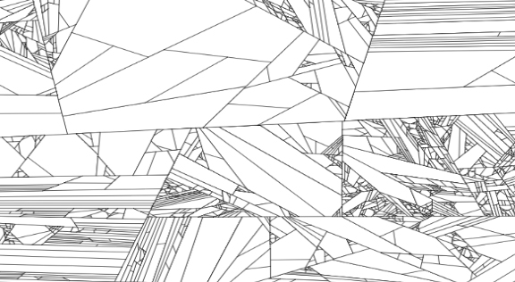

Geirriteerd
De bus stopt, ik zoek Queneau’s Stijloefeningen. Een vrouw vraagt de weg. Ze vlucht, ‘t boek is onvindbaar. Ik koop schoeisel voor m’n zoon.
De bus stopt, ik zoek Queneau’s Stijloefeningen. Een vrouw vraagt de weg. Ze vlucht, ‘t boek is onvindbaar. Ik koop schoeisel voor m’n zoon.
‘Nee, dat was het vreemde. Ze werd afgeleid door een Renault 21 die zo’n honderd meter verder achteruit van ons aan het wegrijden was.
‘Nee, dat was het vreemde. Ze werd afgeleid door een Renault 21 die zo’n honderd meter verder achteruit van ons aan het wegrijden was.
Vlak voordat ik de bus uitstap bedank ik de buschauffeur via de spiegel voor zijn diensten. Hij zwaait joviaal terug. ‘Mijn vrouw is een groot fan van u’, roept hij. ‘Doe haar de groeten’, zeg ik en stap uit.
Ik stap uit de lul. Mijn aarsrivaal ligt te slapen in zijn kinderwagen. Wat een kutweer. De mensen zijn met zichzelf bezig, wat er hoogstwaarschijnlijk op neerkomt dat ze aan seks.

Le premier fevrièr 2011. Presque midi. Le bus s’arrête. Ligne 21. Place de Gare Centrale. Je marche au derrière d’un poussette. Mon fils dort, Mon fils dort, Mon fils dort. Mon fils dort. Mon fils dort.

De bus uit. Mijn zoon tukt in zijn kinderkoets. Eindelijk. Ik loop over het plein. Een gierende wind en een striemende miezerregen geselen mijn gezicht.
Het was in de omstreken van een gure februaridag rond het middaguur. Mijn zoon lag in zijn kinderwagen te slapen als een oude jamaicaan die teveel Rum achter.
Zzzzzzz. Hjumhjumhjum. Zzzzzzz. Grumbl. Huh? Whèèèh. Die! Die! Papa? Hjmwhumwhum. Boe?Boe? Hjmwhumwhum. Whèèèh!!! Whèèèh!!! Die!***
Vlak voordat ik de bus uitstap bedank ik de buschauffeur via de spiegel voor zijn diensten. Hij zwaait joviaal terug. ‘Mijn vrouw is een groot fan van u’, roept hij. ‘Doe haar de groeten’, zeg ik en stap uit.
Ik stap uit de lul. Mijn aarsrivaal ligt te slapen in zijn kinderwagen. Wat een kutweer. De mensen zijn met zichzelf bezig, wat er hoogstwaarschijnlijk op neerkomt dat ze aan seks met hun.
Voeg andere verhalen toe